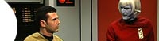

Acervo
Rumo
à Terra Desconhecida
Enterprise
acabou. Oficialmente, foi cancelada pela UPN... E agora? Leia!
Finalmente
o que queríamos
Mas
seria tarde para Manny Coto ajeitar, enfim, o passado de Jornada? Saiba
aqui.
Um
novo mito para o culto de Jornada
Enterprise
ganhou mais uma temporada. Mas por que razo? Leia mais aqui.
O
futuro de Jornada nas Estrelas?

Se
Enterprise for cancelada, o que ser da franquia? Leia mais aqui.
A
nova cara de Enterprise
Conhea
as mudanas implementadas para a terceira temporada, aqui.
Enterprise
e a doutrina Bush
A
nova srie de Jornada comea a caminhar por uma rota perigosa; leia aqui.
A
Misteriosa Identidade B&B
Descubra
aqui como Rick Berman e Brannon Braga se tornaram
a mesma pessoa.
Aos
verdadeiros heris do espao
Homenagem
aos sete astronautas da ltima misso do Columbia. Leia aqui.
A
polmica abertura de Enterprise
Conhea
aqui em detalhes como foi feita a abertura da
mais nova srie de Jornada.
Dores
de crescimento de uma tripulao
Saiba
como os personagens evoluram em relao aos conceitos iniciais aqui.
Aliengenas
aos trancos e barrancos
Veja
aqui os bons e maus usos de velhos aliengenas
na nova srie de Jornada.
Os
novos produtores de Enterprise
Por
que todos os novos roteiristas j chegam em cargos altos? Saiba aqui.
Bakula:
galgando as escadas do poder?
Descubra
aqui se o protagonista de Enterprise pode
ser mais que isso...
'Broken
Bow': Arcos ou Flechas?
Conhea
uma possvel inspirao para o piloto da srie, clicando aqui.
Resgate
da 'boa' fico cientfica
Os
ares do sculo 22 podem fazer bem verossimilhana de Jornada? Verifique
aqui.